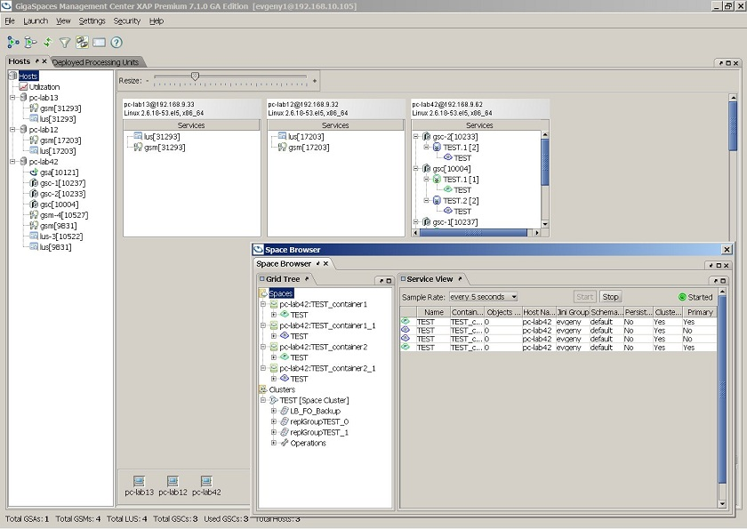
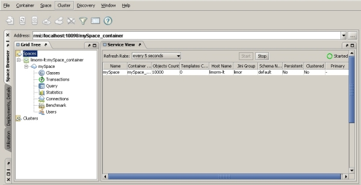
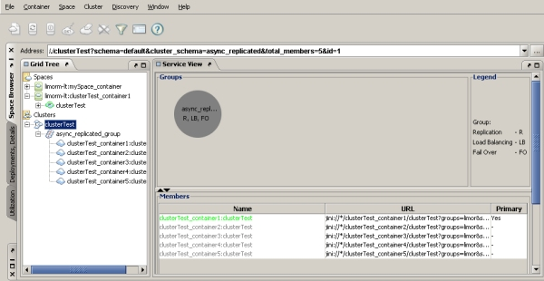

For more information see the GS-UI section in our User Guide.
The GigaSpaces Management Center is a user interface that allows you to do the following:
Follow these network guidelines:
If the host machine doesn't have Internet access, the GigaSpaces Management Center won't start. To prevent this from happening, set the system property com.gs.get-build to false in the setenv-overrides file.
With relatively large amount of GSCs, Services or data grid partitions (over 20 units), we also recommend increasing the heap size of the GigaSpaces Management Center to 1G (-Xmx1g).
To start the GigaSpaces Management Center, run the following:

The GigaSpaces Management Center contains 3 tabs:
The Space Browser tab has the following components.
| Icon | Description |
|---|---|
|
|
The main Spaces node displays the Space Network view – a table listing all spaces in the network, and different details regarding those spaces. |
|
|
Container nodes allow you to manage space containers – shutting down the container, creating a space under it, and more. |
|
|
Container nodes allow you to manage space containers – shutting down the container, creating a space under it, and more. |

| Icon | Description |
|---|---|

|
The main Clusters. |
| The main Clusters node that allow you to manage the cluster – stop, start, restart, clean the cluster, and more. | |
| Cluster group nodes. | |
|
|
cluster members Clicking a cluster member displays a graphic representation of the cluster, and tables showing details regarding replication, failover, load-balancing, and classes. |
